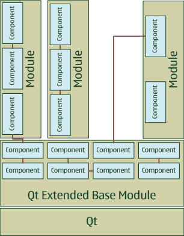

|
Home · All Namespaces · All Classes · Grouped Classes · Modules · Functions | |
[Next: Module concept]
Qt Extended is a selection of modules for Qt enabling optimized software development for embedded Linux devices. Each module is a combination of libraries, plug-ins, applications and server components and can be build independently form other modules. The module system has the following advantages:
The following modules are provided as part of Qt Extended:
| Module name | Description |
|---|---|
| Base | Classes and primary server functionality used by all other Qt Extended modules. |
| Bluetooth | Classes for arbitrary Bluetooth development and various profile implementations. |
| Cell | Telephony support for AT modems. |
| Connectivity | Support for USB, (W)LAN and other types of connectivity. |
| Drm | DRM related classes, plug-ins and configuration applications. |
| Essentials | Commonly used applications such as camera, calculator, clock or picture viewer. |
| Games | Games such as Minesweep, QAsteroids or Snake. |
| Infrared | Infrared back-end support providing features like file transfer, obex push and session management for infrared devices. |
| InputMethods | Various input methods such as keyboards, keypad based input for phones, predictive text and handwriting support. |
| IPComms | Telephony support for VoIP based services such as Telepathy, presence and SIP. |
| Location | Classes for location services and relevant plug-ins. |
| Media | Support for video and sound playback and related management facilities. |
| Messaging | Support for messaging protocols such as SMS, MMS, Email etc. |
| PkgManagement | Support for package management and related security facilities. |
| Pim | Support for PIM management and related applications. |
| Telephony | Fundamental telephony API's and other related user interfaces. |
| Ui | User interface components for the server (e.g. Homescreen & Softmenubar), Themes and related configuration applications. |
Modules assisting during the development process:
| Development Tools | Simplifies development and debugging process. |
| QtUiTest | Support for system tests in Qt Extended. |
The Base module is mandatory and by itself provides the smallest possible Qt Extended configuration. It provides base functionality for all other modules and includes the Qt libraries.
Modules provide a high level selection of functionality. Each module consists of a number of components supporting the main features offered by a module. A component can be
The image below illustrates the connection between components and modules:

Components can depend on each other but a module does not have dependencies to a component in another module (dependencies are indicated by brown lines in the above diagram). The only exception is the Base module. This simplifies the selection and configuration process as developers can concentrate on feature selection rather than on solving dependency issues. From the build systems point of view a component is defined by a project file.
[Next: Module concept]
| Copyright © 2009 Trolltech | Trademarks | Qt Extended 4.4.3 |